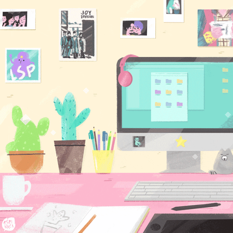

oi, eu sou —
Mayara.
Desenvolvedora Front-End
Estudante de Análise e Desenvolvimento de Sistemas na Uninter (Polo Rondonópolis). Sou apaixonada por front-end, estudo para me tornar full stack e acompanho de perto as tendências do mercado de tecnologia para criar experiências modernas, acessíveis e com impacto real.
Atualmente, desenvolvo aplicações web responsivas utilizando HTML5, CSS3 e JavaScript, criando projetos práticos do zero — como a estruturação de portfólios, páginas interativas e ferramentas organizacionais como gerenciadores de tarefas.
Estou em constante evolução técnica, aprofundando meus conhecimentos em lógica de programação, versionamento com Git e GitHub, design de interfaces no Figma e expandindo meus estudos para dominar o desenvolvimento full stack de ponta a ponta.

Tecnologias
Ferramentas e linguagens que utilizo no desenvolvimento dos meus projetos:
Meus Projetos
Abaixo estão os projetos práticos que desenvolvi para aplicar meus conhecimentos:
Este Próprio Portfólio
Website responsivo desenvolvido do zero utilizando HTML5, CSS3 puro e JavaScript.
Ver RepositórioGerenciador de Tarefas
Aplicação web planejada para organizar rotinas diárias com armazenamento local.
Ver SiteEntre em Contato
